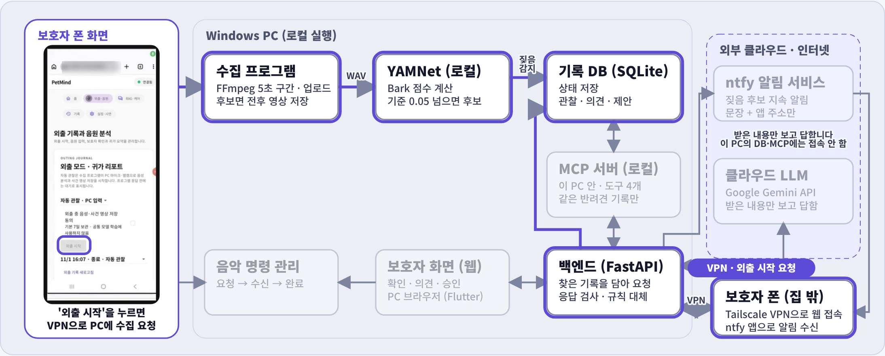
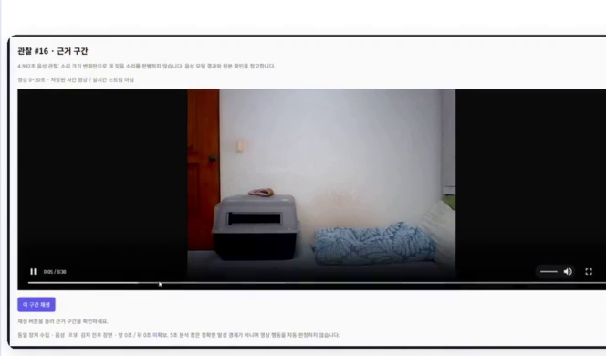
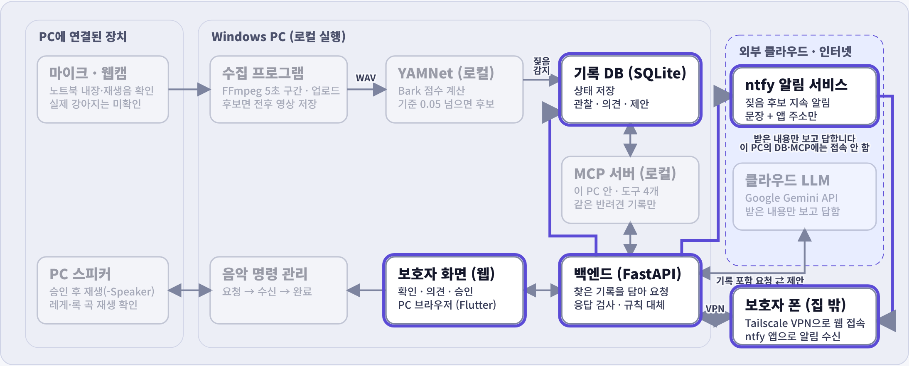
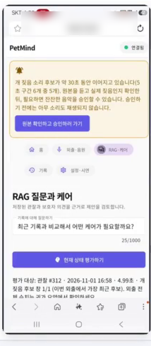
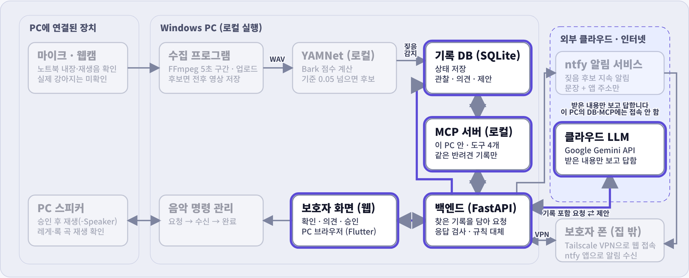
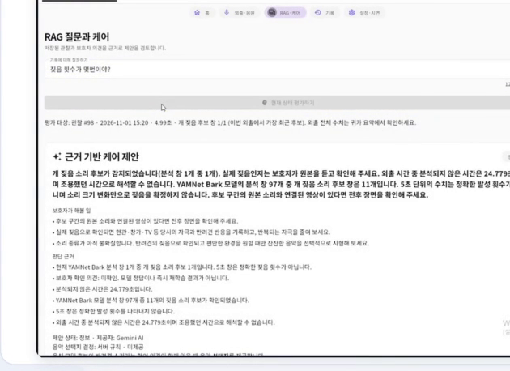
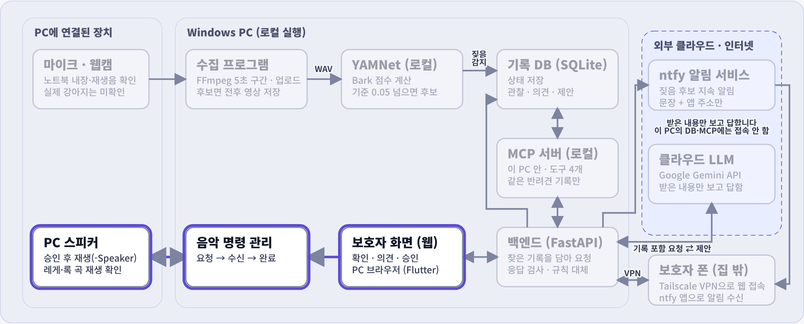
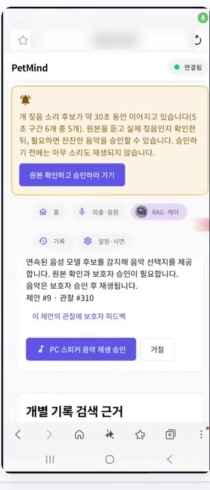

반려동물은 하루 6시간 가까이 혼자 집에 있습니다
지금의 방법
CCTV는 보호자가 앱을 열어야 보이고, TV나 조명은 반려견 상태와 관계없이 켜 둡니다. 계속 짖어도 보호자는 알기 어렵습니다.
필요한 것
짖음이 이어질 때 알려 주고, 보호자가 원본을 확인하고, 필요할 때만 음악 같은 돌봄을 고를 수 있게 하는 것
출처: KB경영연구소, 「2025 한국 반려동물 보고서」 (반려가구 수는 추정치, 혼자 두는 비율·시간·대처 방법은 반려가구 1,000명 설문)
본 프로젝트의 목표
외출 중 반려견이 계속 짖으면 보호자에게 알리고, 보호자가 원본을 확인한 뒤 과거 기록을 근거로 돌봄(음악 재생)을 직접 고르게 돕는다.
집 PC 한 대가 감지·기록·재생을 맡습니다
원본 소리와 영상은 PC 밖으로 나가지 않고, 클라우드는 설명 문장과 알림 중계에만 씁니다.
집 PC LOCAL
- 수집
- 노트북 마이크·웹캠, FFmpeg 5초 구간
- 감지
- YAMNet (TensorFlow Hub)
- 서버·기록
- FastAPI, SQLite
- 기록 검색
- MCP 서버 (읽기 전용 도구 4개)
- 재생
- PC 스피커
보호자 PC · PHONE
- 화면
- Flutter 웹 (PC·폰 브라우저)
- 집 밖 접속
- Tailscale VPN (공개 인터넷에 열지 않음)
- 알림
- ntfy 앱
- 할 일
- 원본 확인 · 의견 · 평가 요청 · 승인
클라우드 CLOUD
- 설명
- Google Gemini API
- 알림 중계
- ntfy 서버
- 받는 것
- 기록에서 뽑은 문장, 알림 문장
- 못 하는 것
- PC의 DB·MCP 서버 접속
9단계로 보는 전체 흐름
오른쪽 버튼이나 키보드로 단계를 넘기며 설명합니다. 아래에는 단계를 네 묶음으로 나눠 실제 화면과 함께 보여 줍니다.
블록도를 한 번 클릭한 뒤 ← →로 단계 이동, Space로 재생과 정지를 합니다.

- 1폰에서 외출 시작
Tailscale VPN을 거쳐 PC 서버에 수집 요청이 만들어집니다
- 2소리·영상 수집
마이크·웹캠을 FFmpeg가 5초씩 자릅니다
- 3YAMNet 짖음 감지
개 짖음 점수가 0.05를 넘으면 후보
- 4기록·사건 영상 저장
후보 구간은 앞뒤 5초를 붙인 영상으로


- 530초 지속 → 폰 알림
최근 6구간 중 5구간이 후보면 ntfy로 알립니다
- 6폰에서 확인
Tailscale VPN으로 접속해 원본을 듣고 의견을 남깁니다


- 7기록 기반 상태 평가
MCP 서버가 같은 반려견의 기록만 찾아 Gemini에 보냅니다
- 8응답 검사
인용한 기록이 실제로 찾은 것인지 확인, 아니면 규칙으로 대체


- 9승인 → PC 스피커 재생
보호자가 승인해야 명령이 가고, 최대 60초 재생 후 결과를 기록합니다

외출부터 음악 재생까지 3분 31초
오른쪽 단계를 누르면 그 장면으로 갑니다.
개를 직접 촬영하기 어려워, 카메라 밖에서 폰 스피커로 개 짖는 소리를 틀어 시험했습니다.
짖음 감지와 전체 연결을 확인했습니다
판정 기준은 0.05로 고정하고 공개 음원과 실제 마이크로 시험했습니다.
확인한 것
- 소리 감지 → 알림 → 승인 → PC 스피커 재생
- 폰·다른 PC에서 접속 (집 밖은 Tailscale VPN)
- 기록 근거 설명과 클라우드로 보내는 범위
아직 확인하지 못한 것
- 실제 강아지 소리의 감지와 알림
- 음악이 강아지를 안정시키는 효과
- 1초 미만 짖음, 울음·고양이 같은 비슷한 소리
공개 음원과 재생음으로 한 시험이며 실제 가정 환경의 정확도는 아닙니다. 수치 출처: 저장소 docs/STATUS.md
만들면서 부딪힌 문제 네 가지
실제 강아지로 검증하는 것이 다음 과제입니다
실제 강아지로 처음부터 끝까지
감지, 30초 알림, 승인, 음악 재생을 실제 짖음으로 시험하고 재생 전후 짖음 변화를 기록합니다.
짧은 짖음과 비슷한 소리
1초 미만 짖음을 놓치는 문제와 울음·고양이 소리 오탐을 줄입니다.
과거 외출과 비교하는 근거
과거 기록에 짖음 점수와 보호자 의견을 담아, 직전 구간이 아닌 지난 외출과 비교하게 합니다.
역할과 느낀 점
김재준
유민형
임성배
감사합니다
질문 받겠습니다